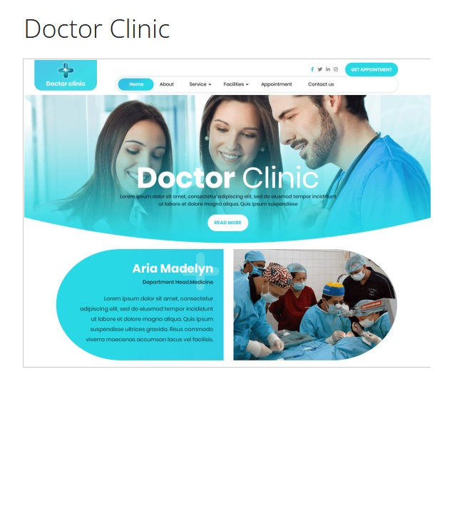
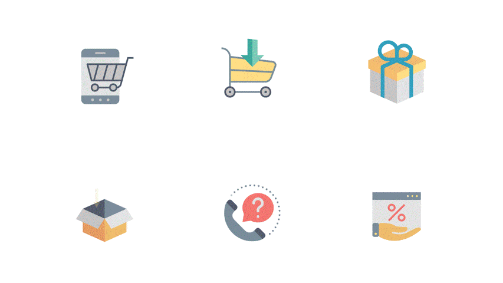
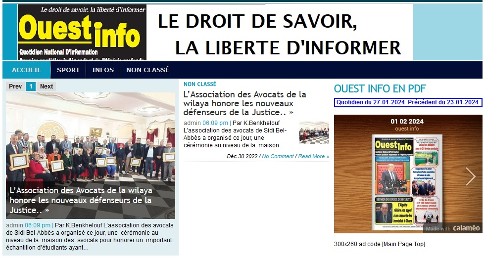

مقدمة
مطور برمجيات ومهندس كمبيوتر معتمد، يقوم بتحليل بيانات العملاء لتصميم واجهات وتجارب مستخدم مثالية. حاصل على شهادة Full-Stack. معروف بقيادته وروح المبادرة، قام بنجاح بإدارة شبكة مبيعات في اتصالات الجزائر، وأعاد هيكلة تنظيمها بناءً على بيانات ديموغرافية لجذب وتطوير قاعدة العملاء على تقنيات الوصول إلى الإنترنت المختلفة (RTC، شبكة النحاس، WLL، CDMA، الألياف البصرية). أثبت كفاءته في العمل الجماعي، والقدرة على التكيف، والتواصل الشخصي، وهي صفات اكتسبها من خلال العديد من المشاريع.
أعمالي
تطبيق إدارة العيادات الطبية

نظام متكامل لإدارة العيادات الطبية.
تطبيق التجارة الإلكترونية

منصة تجارة إلكترونية متكاملة.
موقع جريدة وست انفو

بوابة ويب لجريدة وست انفو.
السيرة الذاتية
جامعة جيلالي ليابس - معهد الإعلام الآلي سيدي بلعباس - الجزائر
حصل على الشهادة في أكتوبر 1998
الأدوات والتقنيات: HTML، CSS، JavaScript، jQuery، AJAX، Node.js، PHP، MySQL، Handlebars، MongoDB، والمزيد
تكوين في التسويق والتسيير بمعهد INPED بومرداس - الجزائر
الدراسات الشخصية
25/03/2024 إلى الآن : مسؤول خطة العمل والتقارير
نوفمبر 2023 إلى الآن
متابعة المشاريع التقنية التجارية والإعلامية للشركة بسيدي بلعباس (شبكة الألياف البصرية، بيع خدمة الإنترنت، الفوترة، تحصيل الديون، إلخ.)
رئيس قسم المبيعات - اتصالات الجزائر
2017 - نوفمبر 2023
إدارة الشبكة التجارية (الهاتف، خدمة الإنترنت، الشبكات، إلخ.)
نائب المدير التجاري - اتصالات الجزائر تيارت
ماي 2016 - جانفي 2017
رئيس خدمة لوحة القيادة - اتصالات الجزائر سيدي بلعباس
سبتمبر 2010 - جانفي 2015
- تحليل البيانات
- متابعة الإنجازات التقنية التجارية
المدير التنفيذي بالنيابة - اتصالات الجزائر سيدي بلعباس
ماي 2016 - سبتمبر 2016
- إدارة وحدة اتصالات
- تنفيذ خطة العمل وتحقيق الأهداف التقنية التجارية (توسيع الشبكات)
- إدارة فرق الإنتاج.
مدير الوكالة التجارية - اتصالات الجزائر سيدي بلعباس
جوان 2008 إلى سبتمبر 2009
- بيع خدمة الإنترنت والهاتف عبر الكابل واللاسلكي
- ضمان جودة الخدمة من خلال الاهتمام الفعال بالعملاء.
رئيس مشروع DJAWEB - وهران
جانفي 2007 - مارس 2008
- تنفيذ شبكة الوصول xDSL (تقنية ألكاتيل)
1999-2003
- مدرب في الإعلام الآلي بمدرسة التوفيق - سيدي بلعباس
- مسؤول شبكة لدى مزود الإنترنت الجزائرية كوم - وهران
بيئة ويندوز
نظام ERP NGBSS، OSS، شبكات الحاسوب، تطبيقات الويب والأندرويد، التجارة الإلكترونية، ووردبريس
اتصل بي
يمكنك أيضًا الاتصال بي مباشرة على carteat22@gmail.com